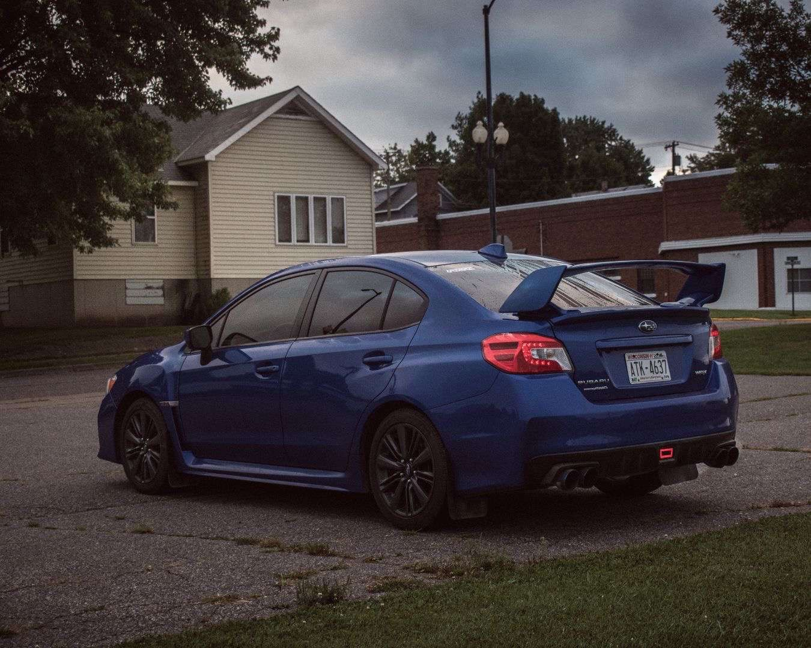
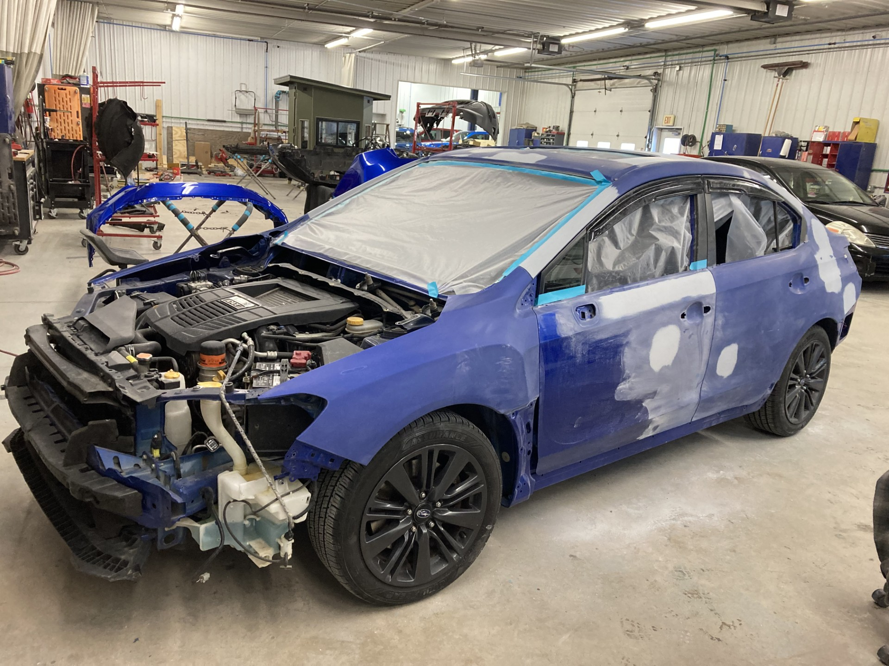
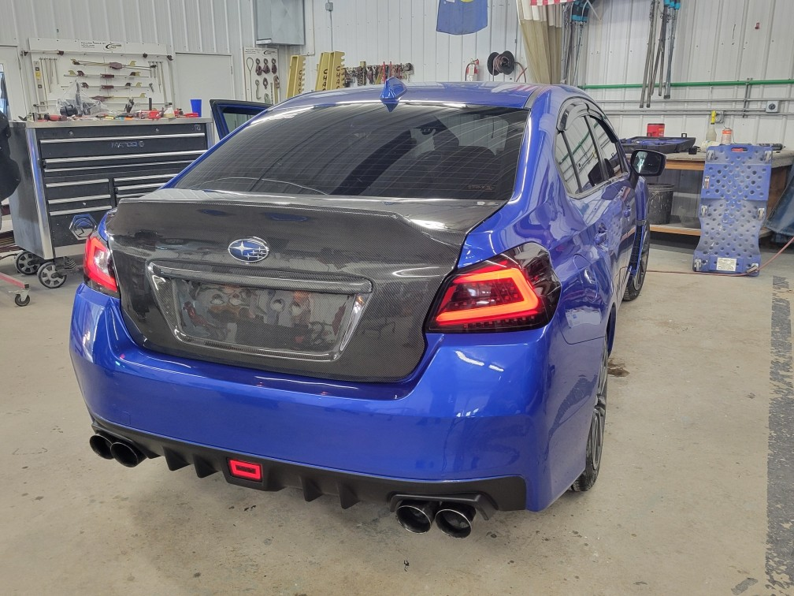
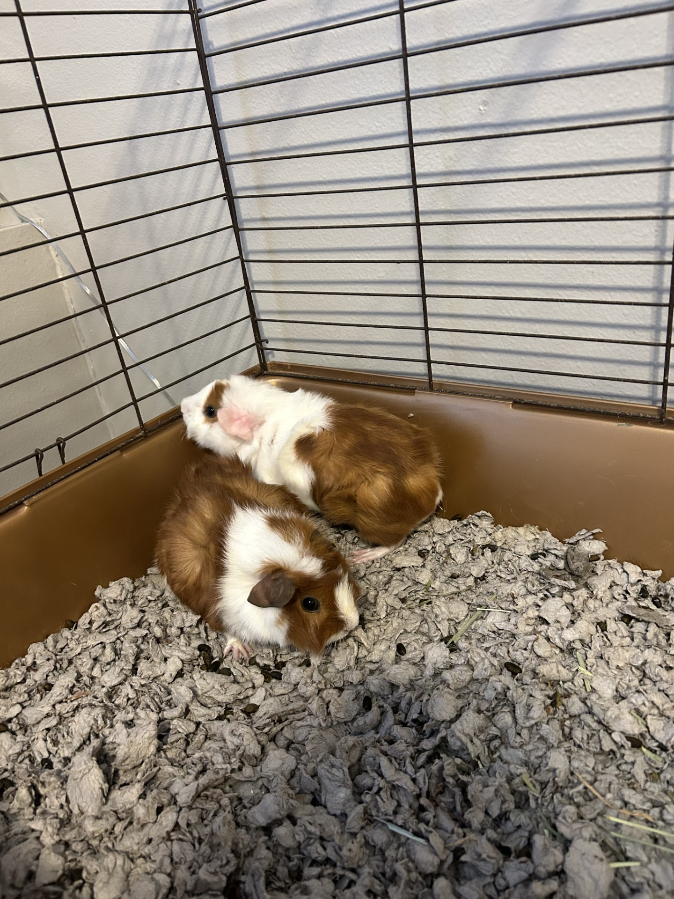
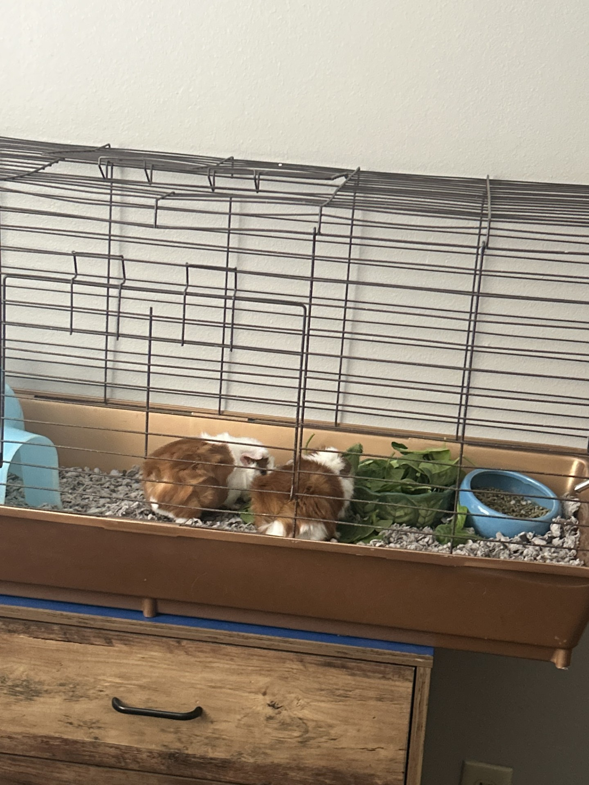

My name is Carter Waldhart and I am 21 some of my favorite hobbies are working on my car. Petting my guinea pigs who are named Whiskey and Turbo. I also enjoy playing competitive games on my computer such as Rocket League. I am originally from Medford Wisconsin which is about an hour and a half east of Eau Claire. I moved here to persue my education in bioinformatics at UWEC. I really enjoy trying new things and have enjoyed my whole college experience so far.
I am currently a student at UWEC who is majoring in my 3rd year of bioinformatics. I really enjoy my major as it consists of coding and biology. We manipulate large datasets and make all kinds of fun charts and graphs and colors. Some of my work experiences include my most recent job which is a yard member at Menards. I just put wood on the shelf and help guests find the items to complete their projects. My job before that was in my hometown where I worked at a cheese factory on the 3rd shift cutting cheese. It was a good paying job but I will never work 3rd shift again due to the lack of sleep.
A Link to My Resume!Here you will find the links to some of my works that I have completed over my years at UWEC. They include my multiple Github repositories realated to my research on parasitic flat worms. Along with a research poster I recently created this spring.
My Research poster! My Github ProjectsMy car is one of my favorite things to ever exist. It is a 2015 Subaru WRX that I have spent modding over the years since my freshman year of college. I put a loud exhaust on it, tinted the windows and put an STI spoiler on the back of it. Until one fateful winter day I brought it to the car wash and was half way through my wash. When out of nowhere a black 2013 Toyota Camry drove through the door and smashed into my rear end and pushed me through the car wash. I was so distraught when I pulled out of the wash seeing my car in shambles and myself being covered in glass. I then spent the next few weeks waiting on the insurance to see if it was totaled. It wasn't totaled but it was within $500 of being totaled. So I did what any normal person would do I slapped carbon fiber on the hood and trunk. With the addition of blacked out sequential tail lights. So thats my cars journey so far and I'm hoping for no more car wash accidents.
  My guinea pigs are my current pets who I love very dearly. Me and my girlfriend bought them in February and they have been living with me for a few months now. Sometimes they make a lot of noise in the night which usually consists of them munching on hay or flipping their house over. Some of their favorite foods are cucumbers and spinach. They also love to cuddle in blankets and burrow under pillows and run all over.
 